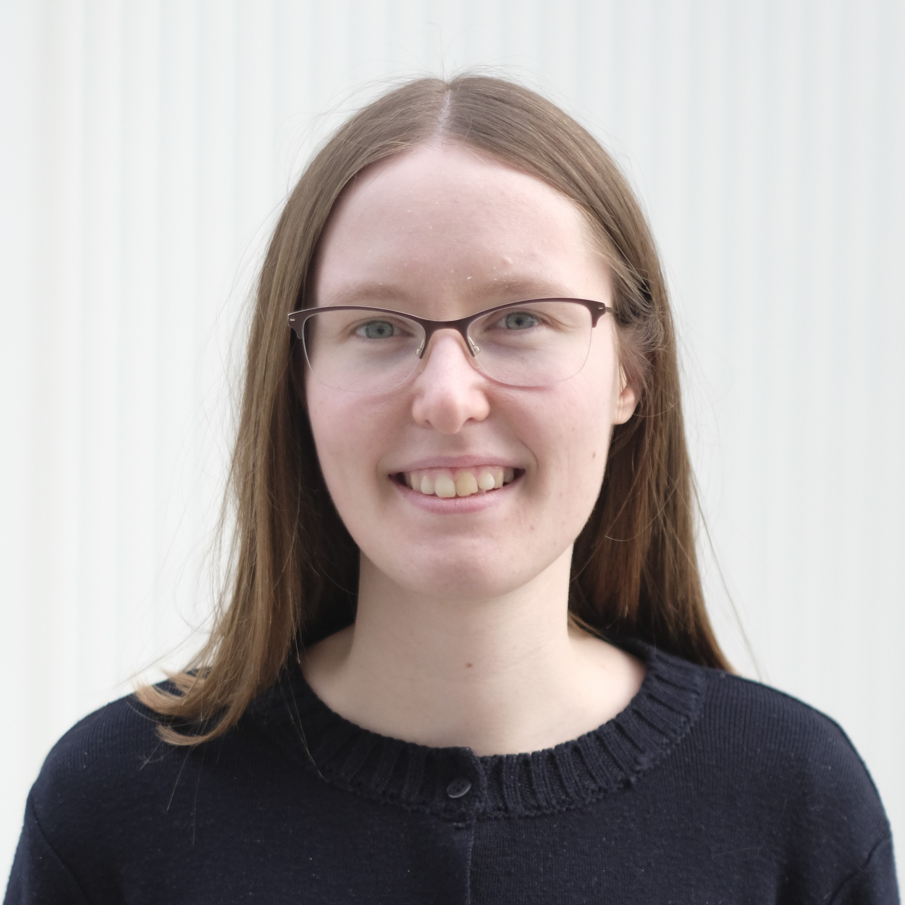

Aurélie Denys
Quantum information scientist at Quandela
I am a researcher in the theory team of Quandela.
My research focuses on quantum error correction and fault-tolerance.
Previously, I was a PhD student at Inria Paris, in the team COSMIQ, under the supervision of Anthony Leverrier.
My PhD thesis is entitled "Quantum key distribution and quantum error correction with bosonic systems" [manuscript][slides].My education and the internships in quantum information I have done prior to that are listed on my LinkedIn profile.
PUBLICATIONS
Paul Hilaire, Théo Dessertaine, Boris Bourdoncle, Aurélie Denys, Grégoire de Gliniasty, Gerard Valentí-Rojas and Shane Mansfield. Enhanced Fault-tolerance in Photonic Quantum Computing: Floquet Code Outperforms Surface Code in Tailored Architecture. arXiv:2410.07065 (2024). [paper]
Aurélie Denys and Anthony Leverrier. Quantum error-correcting codes with a covariant encoding. Phys. Rev. Lett. 133, 240603 (2024). [paper] [video, by Anthony Leverrier]
Aurélie Denys and Anthony Leverrier. The 2T-qutrit, a two-mode bosonic qutrit. Quantum 7, 1032 (2023). [paper] [BBQ 2023 video]
Aurélie Denys, Peter Brown, and Anthony Leverrier. Explicit asymptotic secret key rate of continuous-variable quantum key distribution with an arbitrary modulation. Quantum 5, 540 (2021). [paper] [Qcrypt 2021 video]
The associated Python files are available on the arXiv webpage as ancillary files.
TEACHING
2022-2023
Exercise classes in Quantum information, for 1st-year master students, at Sorbonne Université.
2021-2022
Exercise classes in Quantum information, for 1st-year master students, at Sorbonne Université.
Exercise classes in Python, for 1st-year undergraduates in Computer Sciences, at Sorbonne Université [course website].
2020-2021
Exercise classes in Mathematics for Computer Sciences, for 2nd-year undergraduates in Computer Sciences, at Université Versailles Saint-Quentin (UVSQ) [course website].
SCIENTIFIC OUTREACH
Organisation of the RJMI Inria Paris 2021
The RJMI is a yearly two-day event welcoming girls from high school for activities, conferences, speed meetings, and visits of the research centre. I organised this event with Clémence Bouvier, in parternship with Animath.
CONTACT
e-mail address: aurelie.denys@quandela.com
postal address:
Quandela
7 rue Léonard de Vinci
91300 Massy
FRANCE